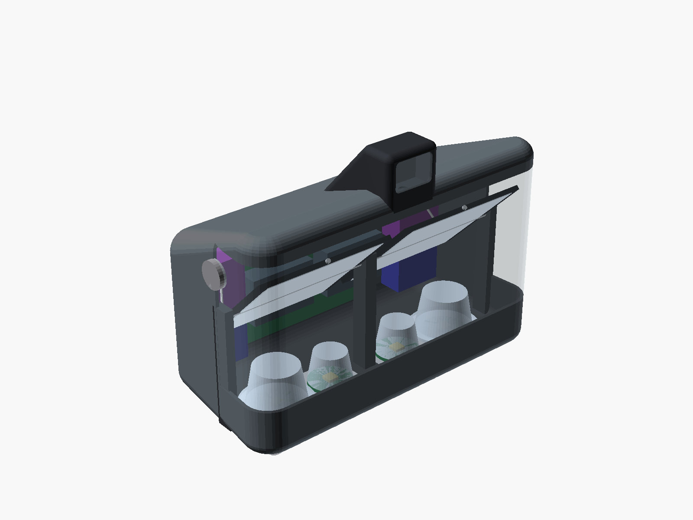
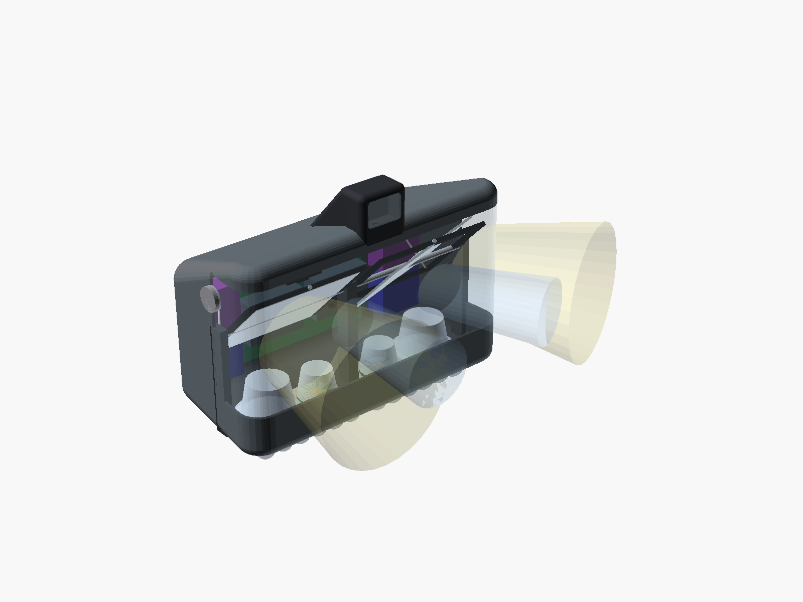
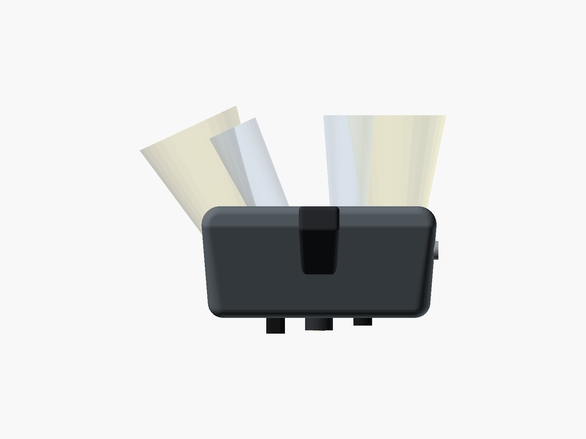
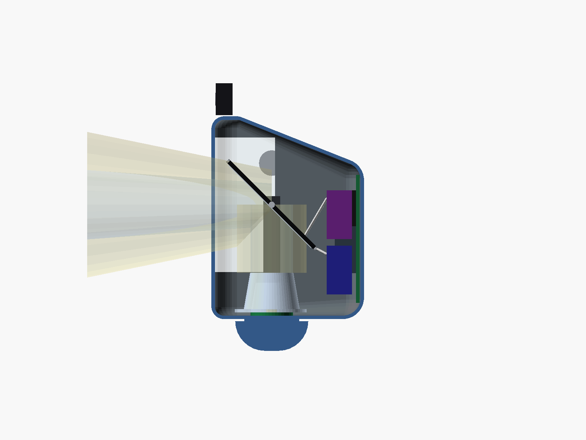
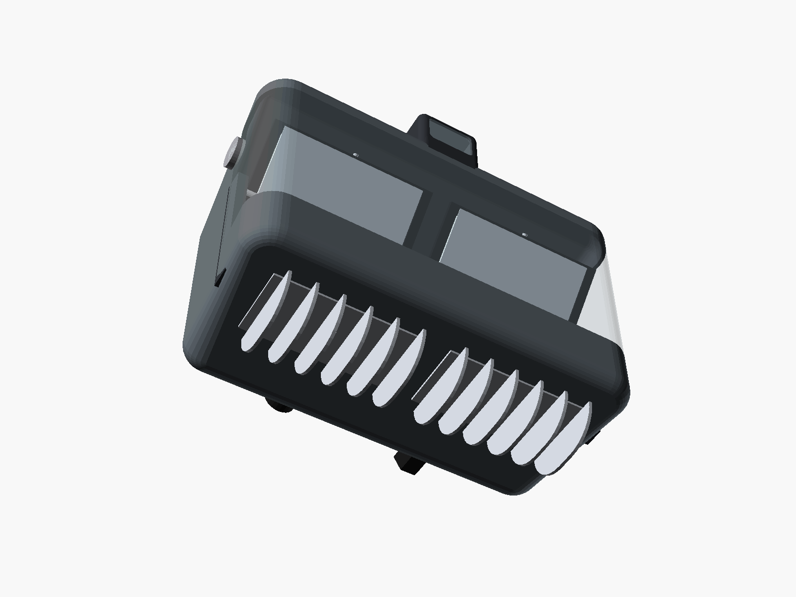
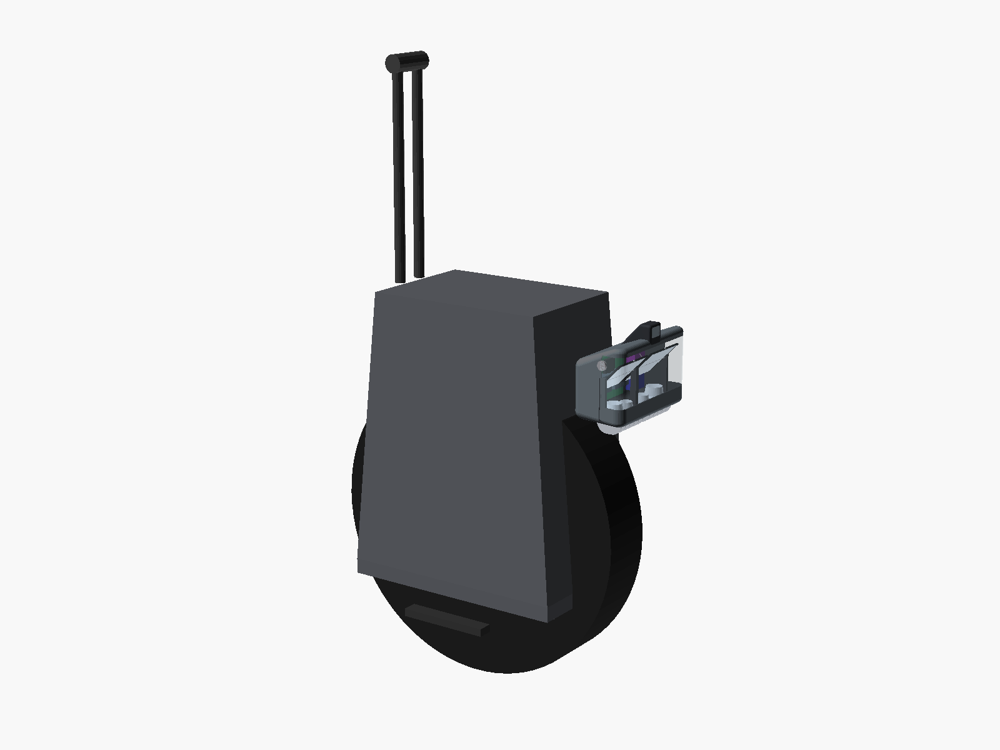
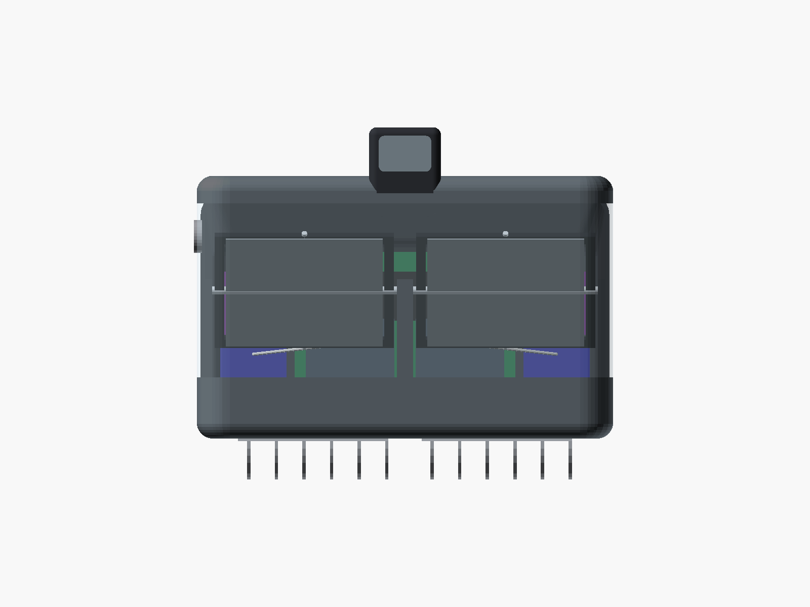
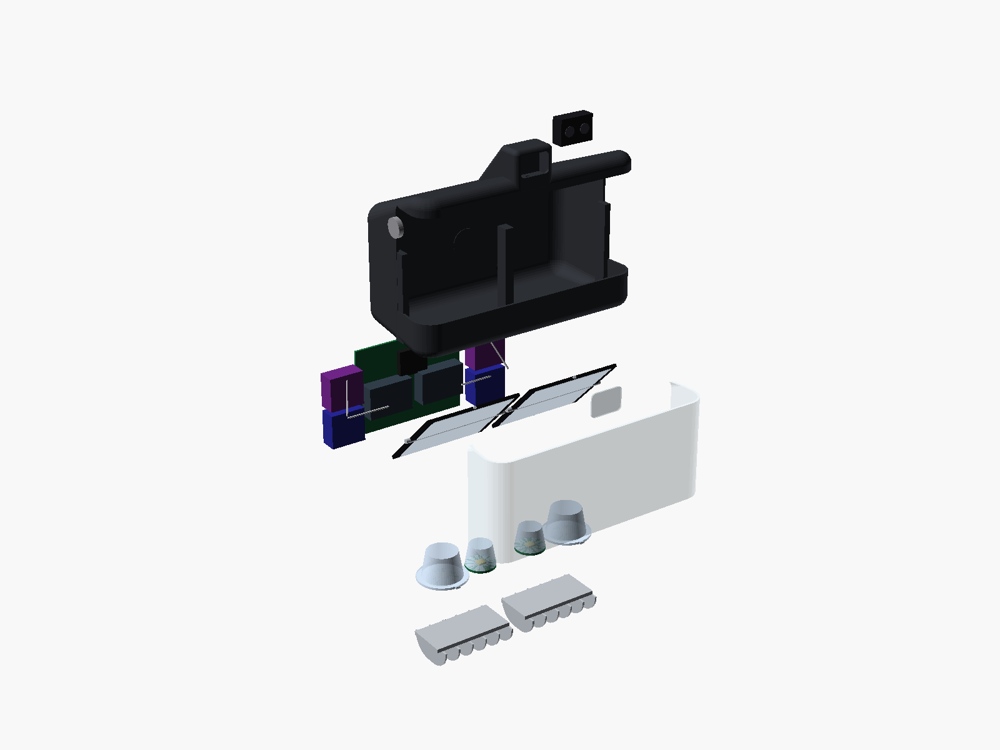

An electric unicycle pitches up to 10° every time you accelerate or brake. This head steers its beams with two small mirrors, so the cutoff stays about 38 m ahead, and swings one beam into each turn.

An EUC has no suspension to hide behind: the whole wheel pitches nose-down when you accelerate and nose-up when you brake. A light bolted to it swings with it. At 10° nose-up, a low beam aimed 1.2° down points almost 9° above the road, straight into oncoming eyes. Nose-down, it lights the ground a few metres ahead. Cars solve this with automatic levelling; EUC lights don't.
Moving a whole lamp means moving its heatsink and wiring. Here the LEDs and heatsinks are fixed and face up; a front-surface mirror at 45° folds each beam forward. Tilt a mirror by θ and its beam moves by 2θ, so ±7.5° of mirror covers ±15° of wheel pitch.
A gated filter trusts the accelerometer only when the wheel isn't accelerating, so braking isn't mistaken for tilting.
Each mirror moves by half the pitch error, the opposite way, through a 4:1 linkage on a 5 g servo.
The firmware removes the lean the measured acceleration explains, then follows the slope that's left. The optional lidar sees the road ahead and catches crests sooner.
Each side has a FILIPPA cutoff optic for the low beam and a Carclo spot for the high beam, sharing one mirror on a two-axis gimbal: pitch for levelling, yaw for turns. Four servos in all.
In a turn, the beam on that side swings up to 25° into the curve, through a clear thermoformed side with no pillar. The other stays straight, so the road you're leaving stays lit. Both mirrors tilt to undo the lean.
A 52-second simulation of the firmware: accelerating and braking at 10°, an 8% hill with a crest, two turns and a slow street, with low and high beam modes (the high beam widens when slow), the lidar on or off, and a fixed light for comparison. It runs the logic from the firmware spec with a perfect IMU.
The packaging model checks that everything fits, sweeps and stays under the weight limit before any part is bought. Layout v4 was chosen on 2026-11-21 over a single-mirror head (v3) with fixed cornering lights. After reviewing the renders the same day, a much smaller lidar moved to a pod on the roof, so the two modules sit side by side and the body narrowed from 200 to about 151 mm.







Estimates from datasheets and the packaging model, to be measured on the bench and on the road. Normal mode runs the LEDs at about 1.5 A; boost at 2.1 A, limited by time and temperature.
| Beam | Low (cutoff) | High (spots) |
|---|---|---|
| Optics | 2 × LEDiL FILIPPA-STVZO | 2 × Carclo 10003 |
| Beam shape | ~22° × 13°sharp top edge | ~8–12° round~20° wide when slow (proposed) |
| Peak, normal | ~6,200–7,300 cd~62 lux at 10 m | ~25,000 cd |
| To 1 lux | ~85 m | ~160 m |
| ANSI throw | ~170 m | ~320 m |
| Width at 30 m | ~16 m | ~5 m |
| Head | Estimate |
|---|---|
| Light out the front | ~1,800 lm~2,400 lm in boost |
| Input power | ~21 W~30 W in boost |
| Runtime, 20 Ah bank at 15 V | ~2.4 h~1.7 h in boost |
| Levelling range | ±15° of pitch |
| Pitch correction | ~0.05 s |
| Hill follow | < 1 s |
| Turn swing | up to 25° |
| Size | ~151 × 72 × 112 mm |
| Sealing target | IP65 |
No battery in the head. A 20 Ah USB-C PD power bank rides in a pouch; a PD trigger cable asks it for 15 V, and only plain DC reaches the head through an IP68 connector.
Inside: a fuse, reverse-polarity and surge protection, two BuckBlock LED drivers, and a 5 V regulator for the servos and the microcontroller.
Parts a hobbyist can order, plus a 3D-printed ASA body. The full list with links and prices is in the bill of materials.
Control loop, BLE remote, Wi-Fi calibration page.
6-axis, ±32 g, so crash detection doesn't saturate.
A 1.35 g sensor in a roof pod that measures the road slope ahead. Optional: everything works without it.
Two behind FILIPPA cutoff optics, two behind Carclo spots.
Run at full current if the MCU dies: the light stays on.
Front-surface glass on printed two-axis gimbals.
Printed body, clear wraparound sides, aluminium heatsink floors.
On the wrist: low/high, flash, brightness. A BLE shutter ring also works.
These invariants are written into the firmware spec, and each one has tests. Calibration and settings go through a page served over the head's own Wi-Fi, which switches off as soon as the wheel moves, and every setting is clamped to a safe range.
Phases run in order, each with its tests. Nothing past the packaging study has started, so this is the best time to change the design: open an issue. The packaging study is nearly done; next is ordering a bench kit and writing the firmware core, with the pure logic tested on a computer first.
Hardware design: optics, mirrors, power, housing, thermal, electronics, lidar, open questions.
docs/firmware-spec.mdControl loop, calibration, auto-off, derating, remote, lidar fusion, calibration page.
docs/test-plan.mdEvery test by ID: automated, bench, enclosure and ride. 125 so far.
docs/build-plan.mdThe phases in order, with checkboxes.
hardware/BOM.mdParts, links, prices, the bench kit and the cost summary.
docs/options-study.mdAlternatives weighed: convex mirror, crossing beams, masks, LCD, two 2-axis mirrors.
cad/OpenSCAD packaging model, render script, clearance and mass checks.
CHANGELOG.mdEvery notable change and decision, dated.